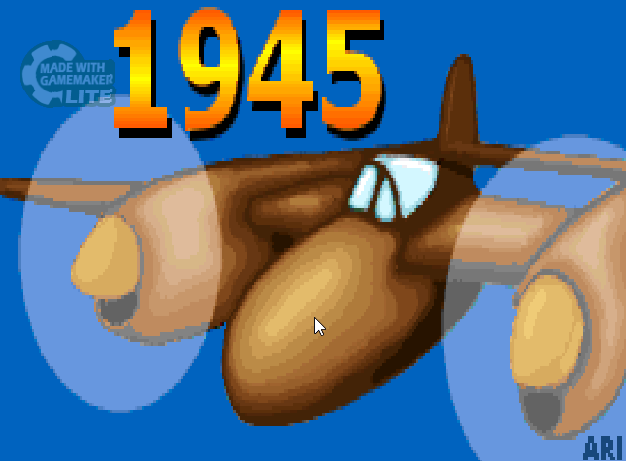

1945

1945 was the first game made by finn mortensen to be publicized.
This was the game that started an entire 'company' and this website.
1945 began when Finn Mortensen, the creater of Nova games, got an assignment from his teacher Miss Scott.
The assignment was to create a game, where the player controlled a plane, and had to destroy enemy planes to get points.
Finn created the game and promptly named it 1945. However, thinking it best the game doesn't throw you straight into a fight.
He put a fake company on the start up menu as a joke.
This was the start of a short line of games, created by Finn.
There is a cheat code built into this game, which grants the player invulnerability. This code was made to ressemble the konami code.
↑ ↑ ↓ ↓ ← → ← → B A 'Space'.